A Kubernetes observability platform for DevOps teams. By making a
cutting-edge technology (called eBPF) more accessible - Groundcover is
replacing traditional data collection mechanisms. They strive to be a
leading standard for visibility and monitoring in a new eBPF world. By
creating a colourful world of friendly creatures from the botanic world,
we tried to express a human perspective, a sense of uniqueness, and
innovation. Our goal was to create a warm, friendly, human, and empathic
brand, so developers feel comfort, knowing we understand their pain and
can troubleshoot effectively.
Client |
Groundcover
Designer and Illustrator | Kate Holub
Art Director | Eden
Vidal
 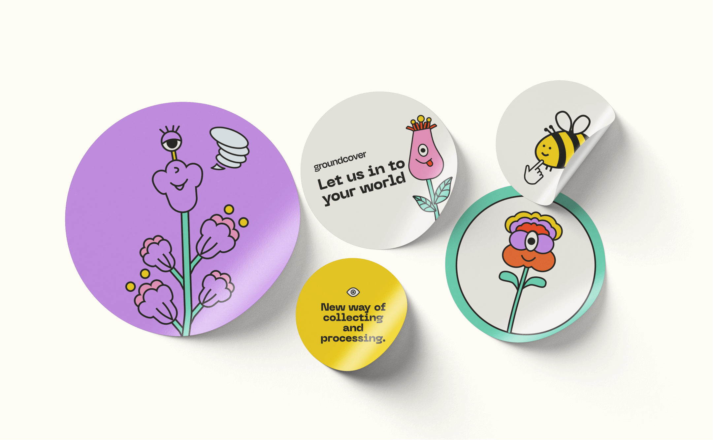
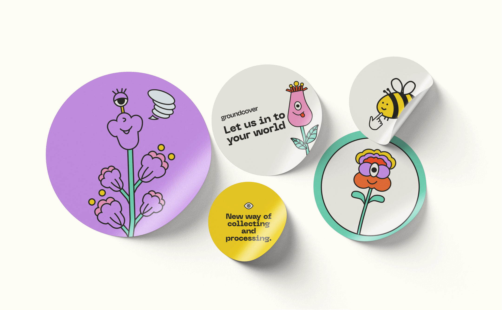


 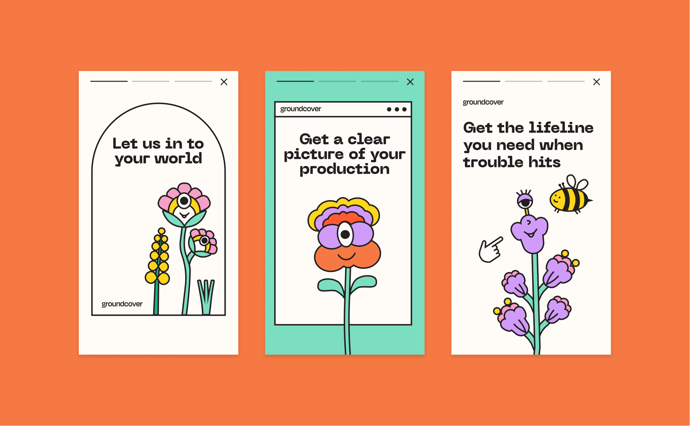
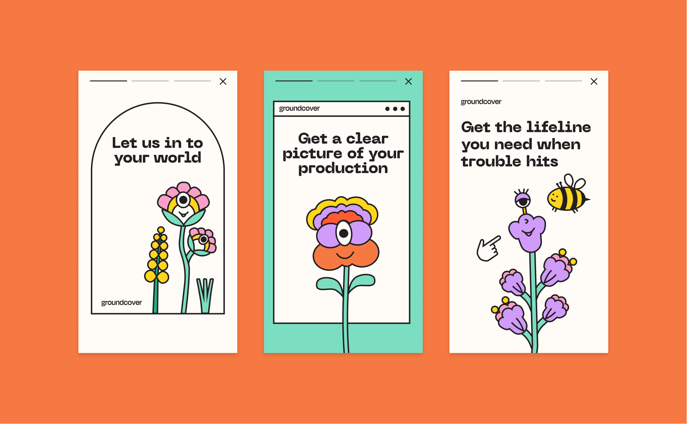
 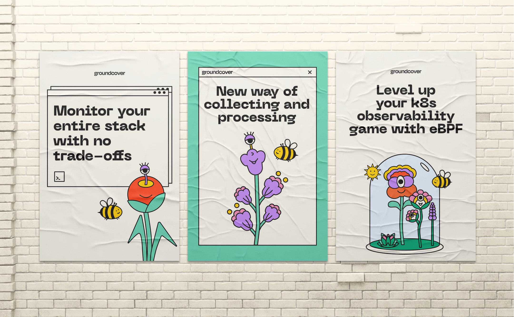
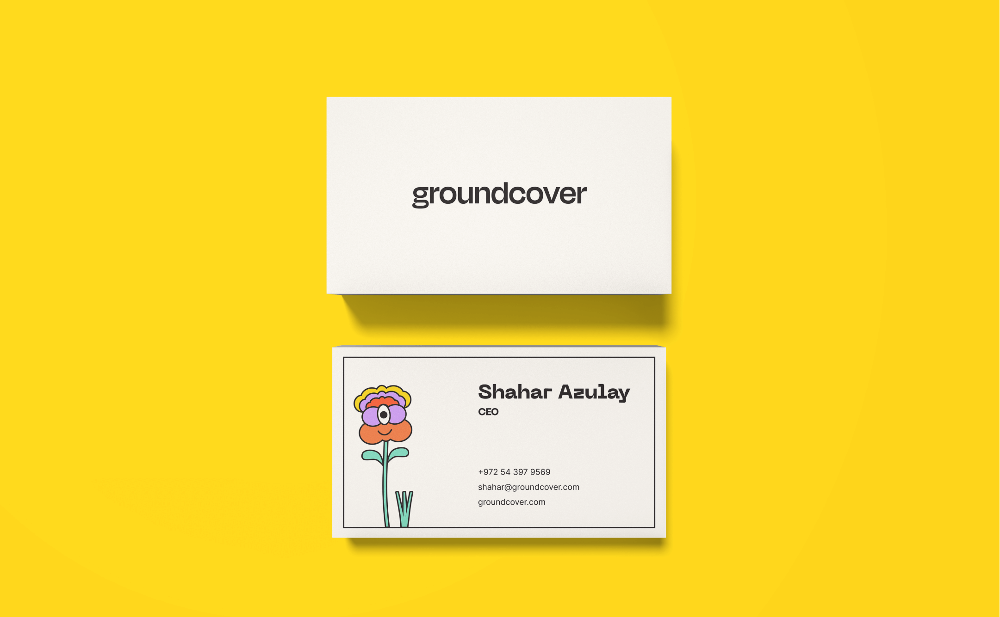
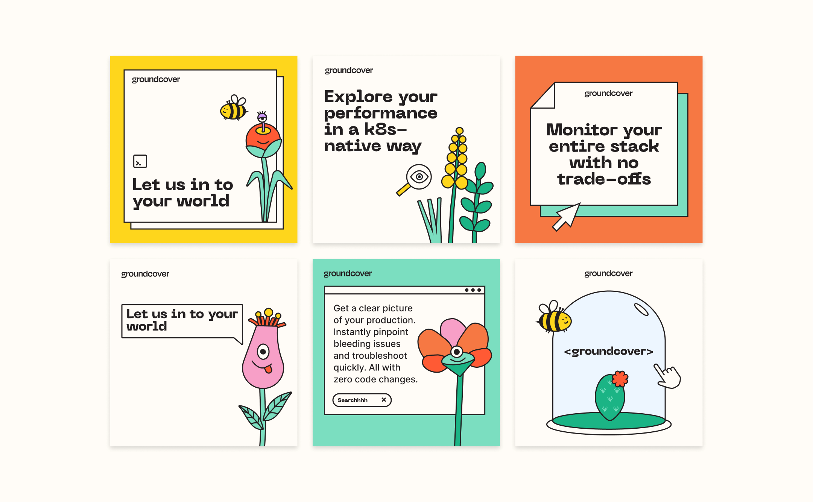
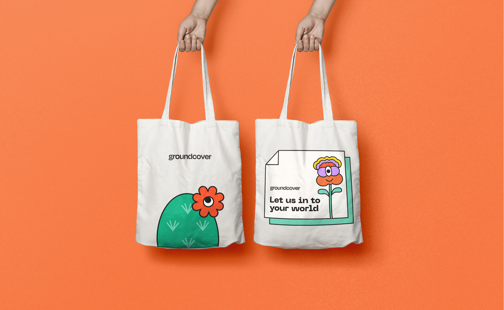
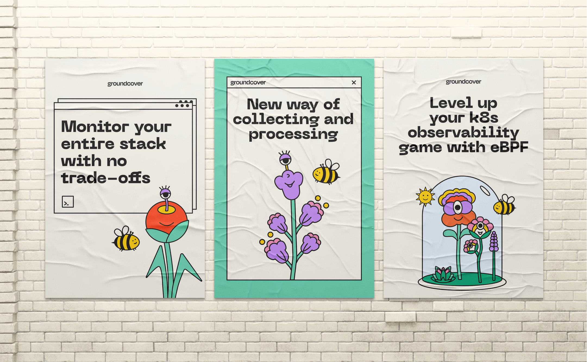
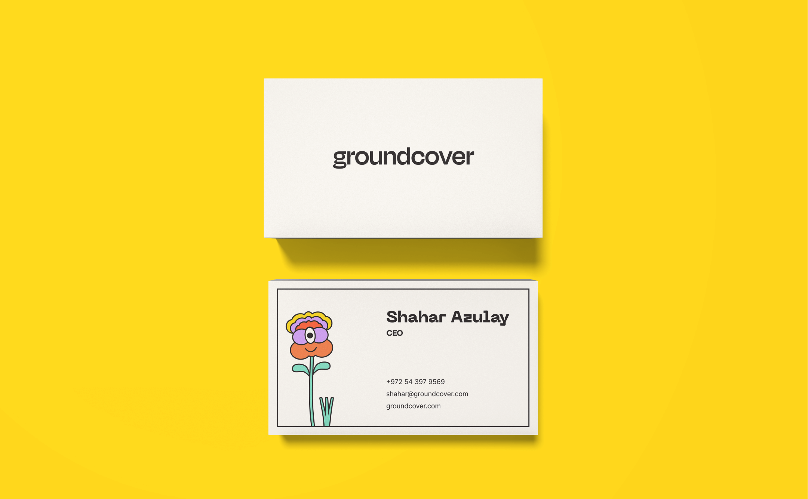
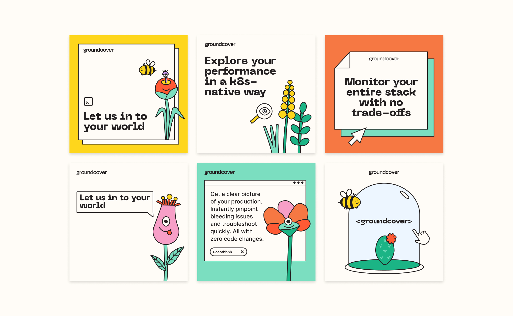
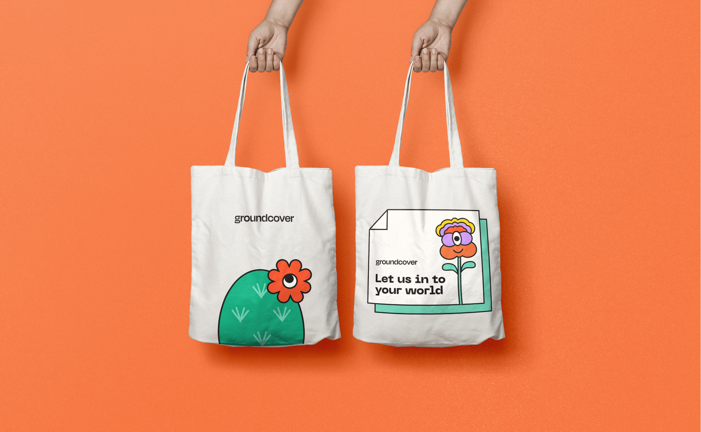